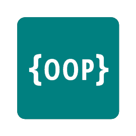

Welcome
Hi, my name is Chris Martyniuk. I am an aspiring software / web developer with a passion for creating engaging, responsive digital media. Enjoy looking at my portfolio.
"Whether you think you can, or you think you can't, you're right."
- Thomas Ford
Note
This site is hand coded with HTML, JavaScript, and CSS, using no external libraries or frameworks.
The only tool used is jChris, a custom website building javaScript library, which I am currently developing.
(click for details)
jChris
Skills
Development Skills
Web
Mobile
Software
User Experience
Concepts
Agile Methodologies
Quality Assurance
Mobile First Design
Object Oriented Programming
